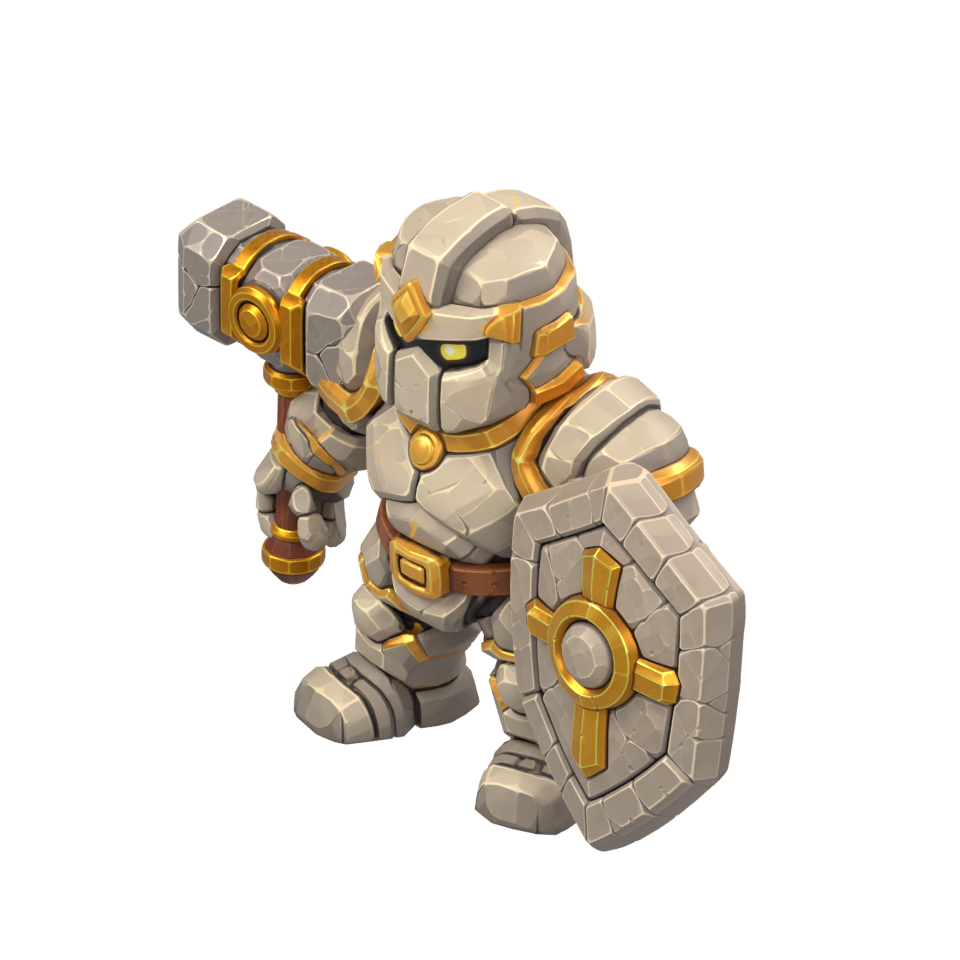
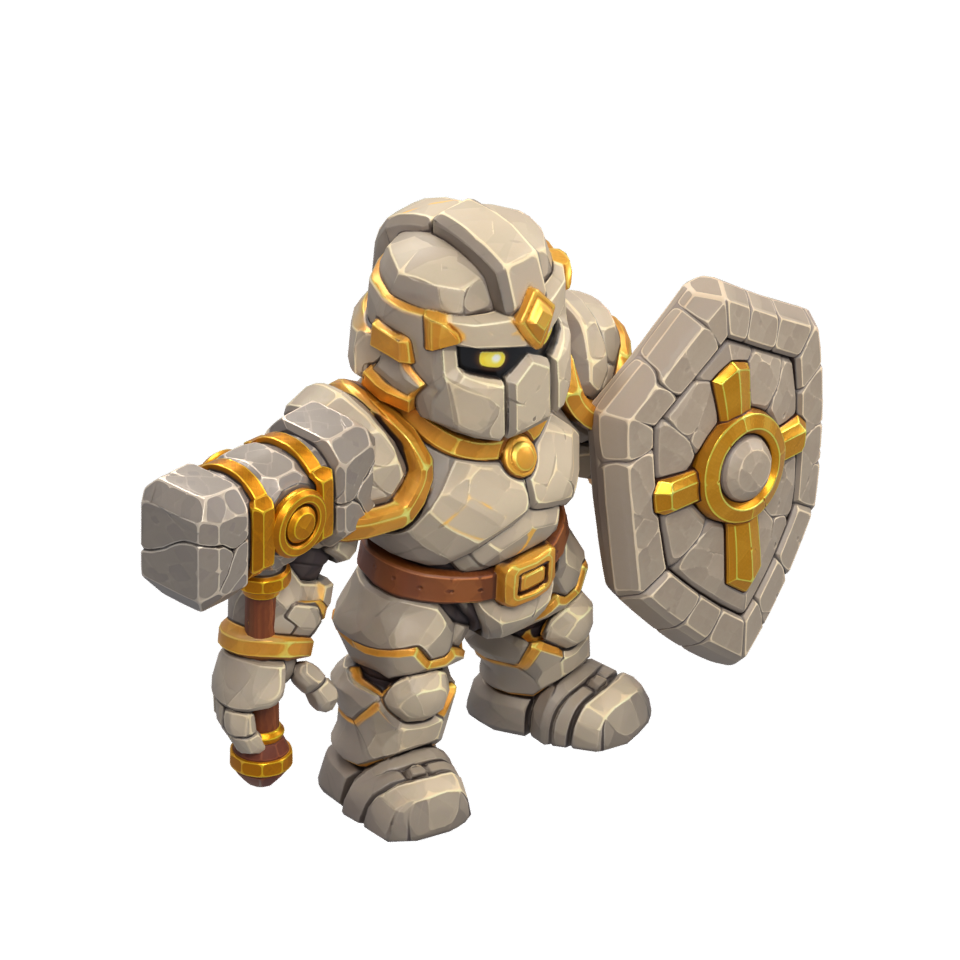
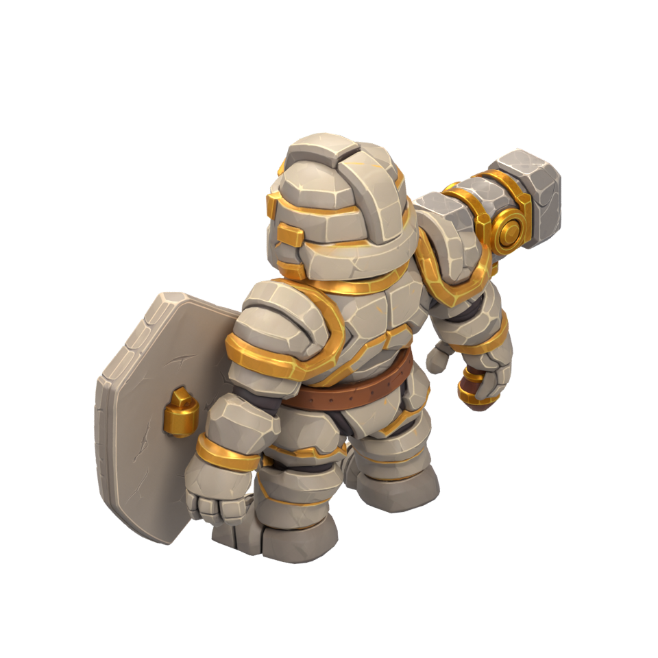
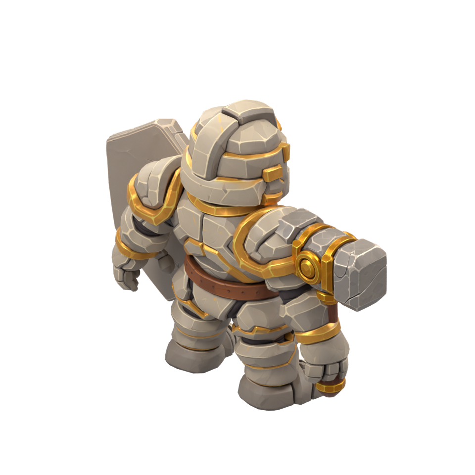

Lithide — first equipment fit
This equipment placement was rejected. See the corrected grip pose. Source inspection remains valid.
Actual user-supplied Meshy models, unchanged paint. Rigged stone paladin with separate rigid hammer and shield. Initial neutral-pose assembly; the closed grip and animation poses still need adjustment.
Blender scene · Inspection and reproduction · Rig report · Saved scene checks

Southwest
Southeast
Northwest
Northeast
No runtime integration or sprite animation yet. Original GLBs are archived with their checksums. No local browser preview is claimed.